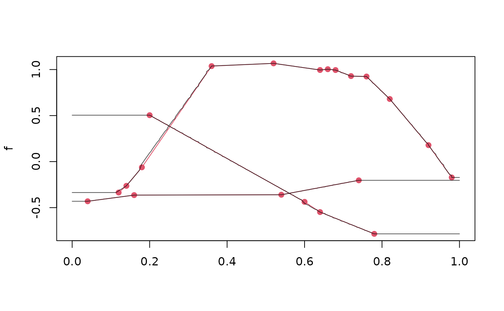

Various constructor methods for tfd-objects.tfd objects contain vectors of function evaluations at observed arg-values,
either all at the same arg-values (tfd_reg) or at different arg-values (tfd_irreg).
NA-functions are represented by NULL-entries in that list.
tfd.matrix accepts a numeric matrix with one function per
row (!). If arg is not provided, it tries to guess arg from the
column names and falls back on 1:ncol(data) if that fails.
tfd.data.frame uses the first 3 columns of data for
id (function ID), arg (argument value) and value (function value)
by default.
tfd.list accepts a list of vectors of identical lengths
containing evaluations or a list of 2-column matrices/data.frames with
arg in the first and evaluations in the second column
tfd.default returns class prototype when argument to tfd() is
NULL or not a recognised class.
as.tfd_irreg converts regular tfd or tfb objects into
irregular ones. Mainly used internally for tf_rebase operations etc.
Usage
tfd(data, ...)
# S3 method for class 'matrix'
tfd(data, arg = NULL, domain = NULL, evaluator = tf_approx_linear, ...)
# S3 method for class 'numeric'
tfd(data, arg = NULL, domain = NULL, evaluator = tf_approx_linear, ...)
# S3 method for class 'data.frame'
tfd(
data,
id = 1,
arg = 2,
value = 3,
domain = NULL,
evaluator = tf_approx_linear,
...
)
# S3 method for class 'list'
tfd(data, arg = NULL, domain = NULL, evaluator = tf_approx_linear, ...)
# S3 method for class 'tf'
tfd(data, arg = NULL, domain = NULL, evaluator = NULL, ...)
# Default S3 method
tfd(data, arg = NULL, domain = NULL, evaluator = tf_approx_linear, ...)
as.tfd(data, ...)
as.tfd_irreg(data, ...)Arguments
- data
a
matrix,data.frameorlistof suitable shape, or anothertf-object. when this argument isNULL(i.e. when callingtfd()) this returns a prototype of classtfd.- ...
not used in
tfd, except fortfd.tf– specifyargandinterpolate = TRUEto turn an irregulartfdinto a regular one, see examples.- arg
For the
list- andmatrix-methods:numeric, or list ofnumerics. The evaluation grid. For thedata.frame-method: the name/number of the column defining the evaluation grid. Thematrixmethod will try to guess suitablearg-values from the column names ofdataifargis not supplied. Other methods fall back on integer sequences (1:<length of data>) as the default if not provided.- domain
range of the
arg.- evaluator
a function accepting arguments
x, arg, evaluations. See details fortfd().- id
The name or number of the column defining which data belong to which function.
- value
The name or number of the column containing the function evaluations.
Details
tfd-objects are list-vctrs of numeric vectors containing function
evaluations.
evaluator: must be the (quoted or bare) name of a
function with signature function(x, arg, evaluations) that returns
the functions' (approximated/interpolated) values at locations x based on
the function evaluations available at locations arg.
Available evaluator-functions:
tf_approx_linearfor linear interpolation without extrapolation (i.e.,zoo::na.approx()withna.rm = FALSE) – this is the default,tf_approx_splinefor cubic spline interpolation, (i.e.,zoo::na.spline()withna.rm = FALSE),tf_approx_fill_extendfor linear interpolation and constant extrapolation (i.e.,zoo::na.fill()withfill = "extend")tf_approx_locffor "last observation carried forward" (i.e.,zoo::na.locf()withna.rm = FALSE)tf_approx_nocbfor "next observation carried backward" (i.e.,zoo::na.locf()withna.rm = FALSE, fromLast = TRUE). Seetf:::zoo_wrapperandtf:::tf_approx_linear, which is simplyzoo_wrapper(zoo::na.approx, na.rm = FALSE), for examples of implementations of this.
Examples
# turn irregular to regular tfd by evaluating on a common grid:
f <- c(
tf_rgp(1, arg = seq(0, 1, length.out = 11)),
tf_rgp(1, arg = seq(0, 1, length.out = 21))
)
#> Warning: Combining incompatible <tfd_reg> with <tfd_reg> by casting to <tfd_irreg>.
tfd(f, arg = seq(0, 1, length.out = 21))
#> New names:
#> • `1` -> `1...1`
#> • `1` -> `1...2`
#> tfd[2]: [0,1] -> [-2.005736,1.048938] based on 21 evaluations each
#> interpolation by tf_approx_linear
#> 1...1: ▅▅▅▆▆▇▇█████▇▆▅▄▃▃▂▃▃
#> 1...2: ▄▃▃▂▁▁▁▁▁▂▃▄▅▆▆▆▆▇▇▇█
set.seed(1213)
f <- tf_rgp(3, arg = seq(0, 1, length.out = 51)) |> tf_sparsify(0.9)
# does not yield regular data because linear extrapolation yields NAs
# outside observed range:
tfd(f, arg = seq(0, 1, length.out = 101))
#> Warning: ℹ 86 evaluations were `NA`
#> ✖ Returning irregular <tfd>.
#> irregular tfd[3]: [0,1] -> [-0.7846883,1.067128] based on 59 to 87 (mean: 72) evaluations each
#> interpolation by tf_approx_linear
#> 1: (0.20, 0.50);(0.21, 0.48);(0.22, 0.46); ...
#> 2: (0.12,-0.34);(0.13,-0.30);(0.14,-0.26); ...
#> 3: (0.04,-0.43);(0.05,-0.43);(0.06,-0.42); ...
# this "works" (but may not yield sensible values..!!) for
# e.g. constant extrapolation:
tfd(f, evaluator = tf_approx_fill_extend, arg = seq(0, 1, length.out = 101))
#> tfd[3]: [0,1] -> [-0.7846883,1.067128] based on 101 evaluations each
#> interpolation by tf_approx_fill_extend
#> 1: ▆▆▆▆▆▆▆▅▅▄▄▄▃▃▂▂▂▁▁▁▁▁▁▁▁▁
#> 2: ▂▂▂▃▄▄▅▆▇███████████▇▇▆▅▄▃
#> 3: ▂▂▂▂▂▂▂▂▂▂▂▂▂▂▂▃▃▃▃▃▃▃▃▃▃▃
plot(f, col = 2)
tfd(f,
arg = seq(0, 1, length.out = 151), evaluator = tf_approx_fill_extend
) |> lines()
